In this tutorial you will learn how to use the tooling provided by JBoss Fuse to add a data transformation to a predefined Camel route. The Camel route used in this example directs messages from a source endpoint that produces XML data to a target endpoint that consumes JSON data. You will add a data transformation to map the XML data to JSON data in order for this route to work correctly.
Prerequisites
JBoss Fuse tooling is installed on JBoss Developer Studio. See Install Red Hat JBoss Developer Studio Integration Stack.
Maven is installed and configured correctly. See Red Hat JBoss Fuse Maven Repositories.
You have downloaded the transformation quickstart applications for use with this technical preview.
Procedure
Import the
starterquickstart application in JBoss Developer Studio.Select > . Expand and select , then select .
You are prompted to select a Maven project to import. Select and navigate to the root directory of the
starterquickstart application, then select . Review the selection and select . The starter application will appear in the Project Explorer.Expand the
starterproject in the Project Explorer and navigate tostarter/src/main/resources/META-INF/spring/camel-context.xml. Open this file to view the Camel route. By default, the file is presented visually on the Design tab.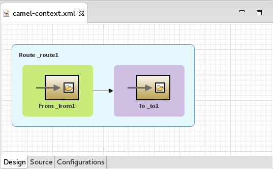Select the Source tab to view the underlying XML. You can see that an XML file is produced from a source endpoint and a JSON file is consumed by a target endpoint.
Add a data transformation to the Camel route.
Select the Design view for the
camel-context.xmlfile.Remove the arrow connecting the two endpoints.
![[Note]](imagesdb/note.png)
Note Do not save your project at this point. If you save your project now, the endpoints will disappear.
Click on the Transformation drawer in the Palette. Drag a Data Transformation endpoint onto the canvas.
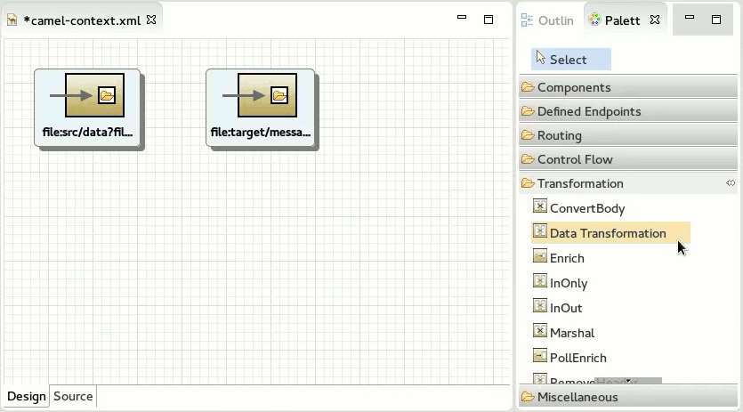This will invoke the New Transformation wizard. If the Palette is not yet visible, select > > , then expand and select .
In the New Transformation wizard, set the following values (leaving all other default values) then select .
Field Value Transformation ID xml2jsonSource Type XMLTarget Type JSONNow you are prompted to provide the source type definition. You can do this by supplying either an XML Schema (default) or an example XML Instance Document. Leave the default option and browse to select a Source File. Choose
abc-order.xsd, then select . You are provided with a preview of the XML. Select to continue.Now you are prompted to describe the target type definition in the same way. Browse to select a Target File. Choose
xyz-order.json, then select OK. Because this is an example file, the JSON Type Definition is updated automatically to reflect this. Select .
You are now presented with the transformation editor with source fields on the left and target fields on the right. Map one set to the other.
Expand all of the fields on both sides of the transformation editor.
Drag the source
customerNumfield from the left onto the targetcustIdfield on the right. The transformation (or mapping) will appear in the center.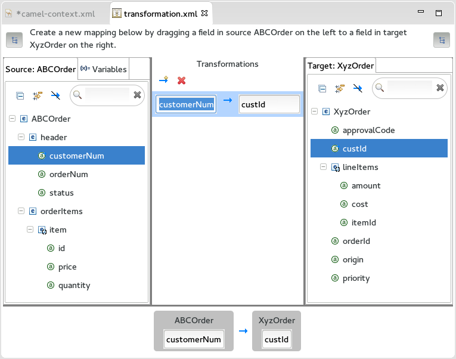Continue to map the fields as follows:
Source Target orderNumorderIdstatuspriorityitemlineItemsiditemIdpricecostquantityamount
Map any remaining fields.
Click on Hide mapped fields for both source and target to determine whether all fields have been mapped.
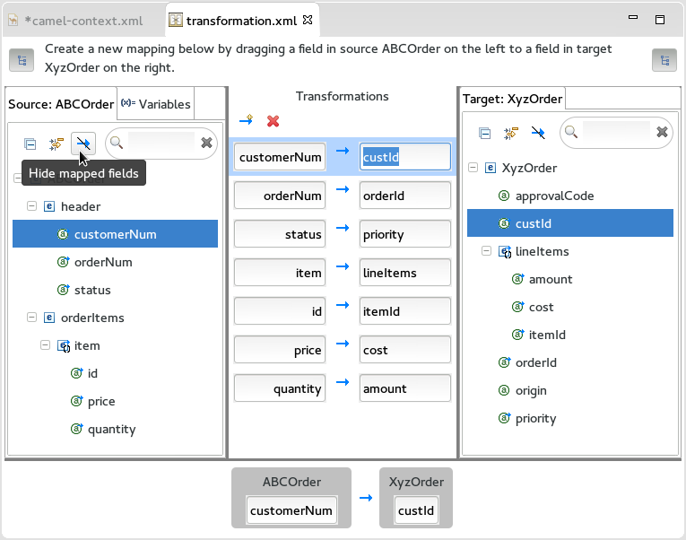You will find that the target
approvalCodeandoriginfields remain unmapped.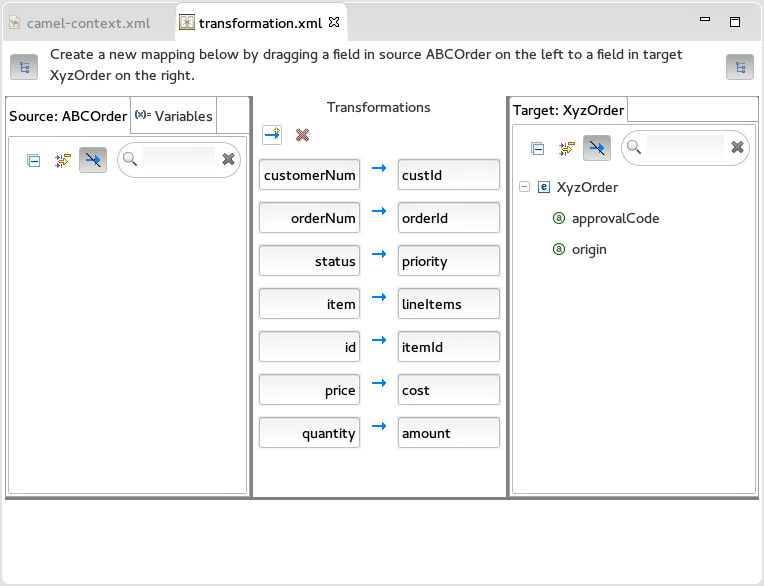Map the
originfield to a constant variable: click on the Variables tab on the Source side. Select Add a new variable.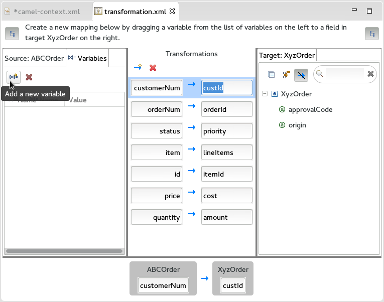You are prompted to Enter a new variable name. Enter
ORIGINand select . The variable is created and appears on the left in the Variables window.Select the default value and change it to
Web.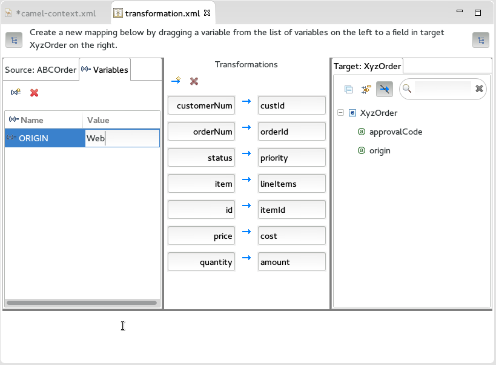Drag the new variable onto the target
originfield.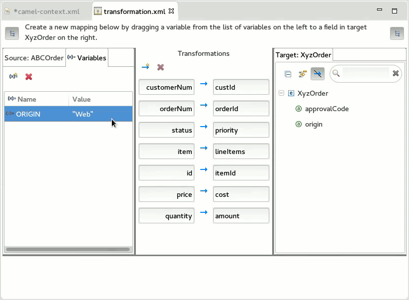Associate the
approvalCodefield with a dynamic evaluation of a Camel language expression: select Add a new mapping.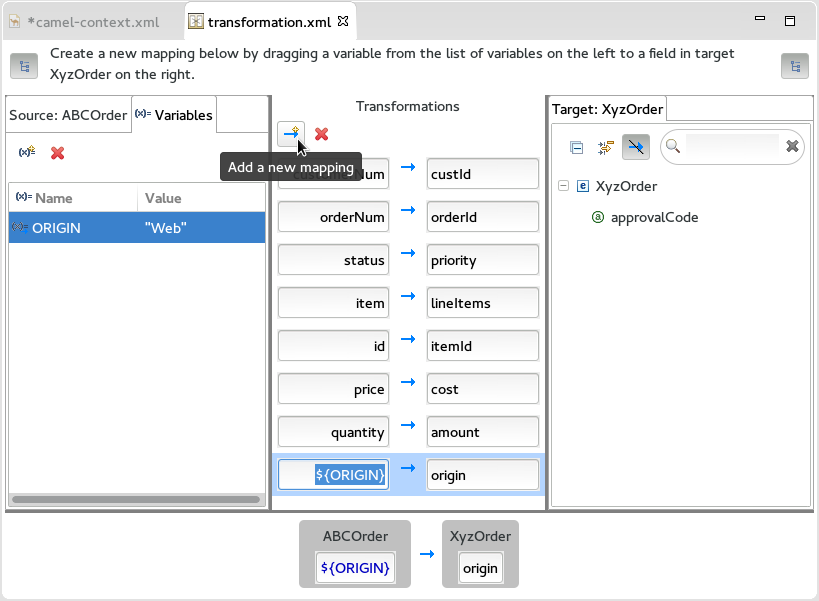An empty transformation is added.
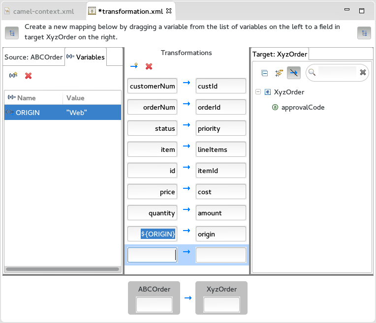Drag
approvalCodefrom the target list into the target box of the empty transformation. You will notice that the selected transformation also appears in a window below. When you move your cursor over the source field in this view, an arrow appears. Select this arrow to open the menu from which you select .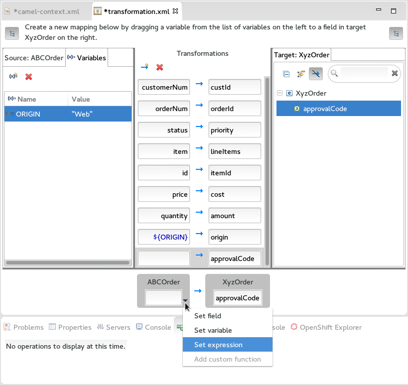You are prompted to select the expression language, and to enter an expression. Set the following values, then select :
Field Value Language HeaderExpression ApprovalID
Connect the endpoints.
Select the
camel-context.xmltab to focus on the Camel route again.When you hover your cursor over each endpoint, you are presented with an option to Create connection.

Create a connection from the source endpoint to the transformation endpoint and then from the transformation endpoint to the target endpoint. Save your changes. The endpoints are automatically arranged horizontally.
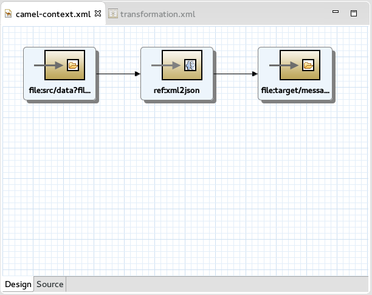
Test your data transformation.
Select > > . Expand and select , then select . This will invoke the New Transformation Test wizard.
In the New Transformation Test wizard, set the following values:
Field Value Package exampleTransformation ID xml2jsonIn the Project Explorer navigate to
starter/src/test/java/exampleand then open theTransformationTest.javafile.Add the following code to the
transformmethod:startEndpoint.sendBodyAndHeader(readFile("src/data/abc-order.xml"), "approvalID", "AUTO_OK");Ensure the
TransformationTest.javafile has focus, then select > > .The output will be presented in the Console window. Here you can see both the source XML and the resulting target JSON.
Example 1. Source XML
<ABCOrder xmlns:xsi="http://www.w3.org/2001/XMLSchema-instance" xmlns:java="http://java.sun.com"> <header> <status>GOLD</status> <customer-num>ACME-123</customer-num> <order-num>ORDER1</order-num> </header> <order-items> <item id="PICKLE"> <price>2.25</price> <quantity>1000</quantity> </item> <item id="BANANA"> <price>1.25</price> <quantity>400</quantity> </item> </order-items> </ABCOrder>Example 2. Target JSON
{"custId":"ACME-123","priority":"GOLD","orderId":"ORDER1","origin":"Web","approvalCode":"AUTO_OK","lineItems":[{"itemId":"PICKLE","amount":1000,"cost":2.25},{"itemId":"BANANA","amount":400,"cost":1.25}]}